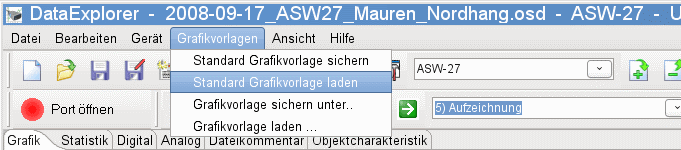
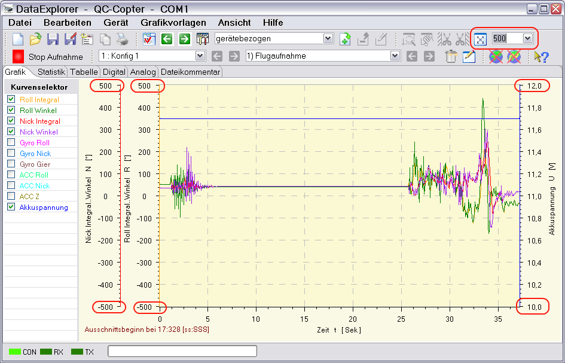

Im Grafikvorlagenmenü werden die Vorlagen verwaltet, die das Aussehen des Grafikfensters beeinflussen. Falls vorhanden, wird entsprechend der Konfiguration oder des Geräteausgangs die Grafikkonfiguration geladen. Grafikvorlagen enthalten die Skalenendwerte, Kurvenfarben, Kurvenstrichdicke, usw. Die meisten Einstellungen, die über das Kurvenselektor-Kontextmenü eingestellt werden, werden in Grafikvorlagen gesichert. Der Pfad zu diesen Dateien ist "GraphicTemplates" unter dem Anwendungskonfigurationspfad. Gibt es zu einer Datei zur Aktualisierungszeit eine passende Grafikvorlage, wird diese automatisch geladen.

Hat man für sich eine Einstellung gefunden, die die Kurven, die man für wichtig hält, anzeigt, sollte man diese Grafikkonfiguration als Standard sichern. Die Grafikvorlagen enthalten also Definitionen, die die Endwerte einer Skala einstellen. Bei Geräten, die Live-Aufnahmen erlauben, könnte das ein wichtiger Einflussfaktor zur Beurteilung der Kurven sein. Bedenkt man, dass bei der Kurvendarstellung immer die volle Höhe der Skala, also des Werteraumes für die Daten, ausgenutzt werden, so können Kurven mit kleinen Abweichungen gleich aussehen, wie Kurven mit zehnfachen Werten. Lediglich die Werte der Skala ändern sich. Ist das der Fall, ist es praktisch, sich eine Grafikvorlage zu konfigurieren, die die Min- und Max-Werte definiert. Am Anfang der Live-Aufnahme geladen, bleiben dann die Skalenendwerte über die gesammte Messung erhalten. Als Beispiel hierzu eine Aufnahme mit der QuadroControl, die je nach Bewegungsrichtung und Stärke über Beschleunigungsaufnehmer Gegenmaßnahmen einleitet. Besonders wichtig sind diese Einstellung im Oszilloskopemode, wenn nur ein kleiner Teil der Kurve gerade sichtbar ist.

Hinweis: Die Funktion der Grafikvorlagen ergänzt sich bei manchen Geräten mit der Sichtbarkeitskonfiguration. Sind Messkurven in der Sichtbarkeitskonfiguration ausgeschaltet oder enthalten keine sinnvollen Daten, z. B. nur Nullen, werden sie auch durch Laden der Grafikkonfiguration nicht sichtbar. Geräte mit Messkurven-Sichtbarkeitskonfiguration sind CSV2SerialAdapter, WStech, GPS-Logger, NMEA-Adapter, UniLog und viele andere. Mit dem Dialog der Sichtbarkeitskonfiguration, kann man deren Erscheinen aber erzwingen.